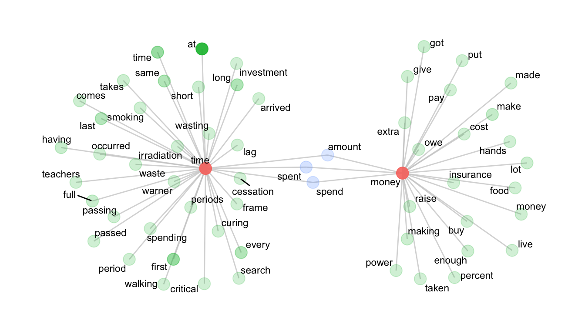
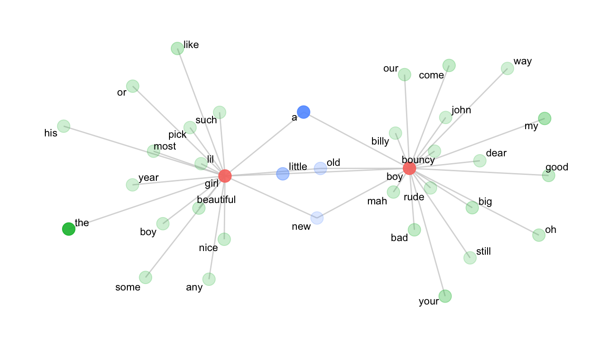

library(ggraph)
library(gt)
library(quanteda)
library(quanteda.textstats)
library(tidyverse)5 Collocations & Association Measures
This is a short lab that introduces the concept of:
- collocations,
- how to calculate word association measures like pointwise mutual information, and
- how to plot collocational networks.
This lab will also cover the process of reading in a corpus from a directory of text files.
5.1 Load the needed packages
Load data:
load("../data/sample_corpus.rda")Load functions:
source("../R/helper_functions.R")
source("../R/utility_functions.R")
source("../R/collocation_functions.R")5.2 Prepare the data
First, we’ll pre-process our text, create a corpus and tokenize the data:
sc_tokens <- sample_corpus %>%
mutate(text = preprocess_text(text)) %>%
corpus() %>%
tokens(what="fastestword", remove_numbers=TRUE)5.3 Collocates by mutual information (MI)
The collocates_by_MI( ) function produces collocation measures (by pointwise mutual information) for a specified token in a quanteda tokens object. In addition to a token, a span or window (as given by a number of words to the left and right of the node word) is required. The default is 5 to the left and 5 to the right.
The formula for calculating MI is as follows:
\[log_{2} \frac{O_{11}}{E_{11}}\] Where O11 and E11 are the observed (i.e., node + collocate) and expected frequencies of the node word within a given window. The expected frequency is given by:
\[E_{11} = \frac{R_{1} \times C_{1}}{N}\]
- N is the number of words in the corpus
- R1 is the frequency of the node in the whole corpus
- C1 is the frequency of the collocate in the whole corpus
We’ll start by making a table of tokens that collocate with the token money.
money_collocations <- collocates_by_MI(sc_tokens, "money")Check the result:
| token | col_freq | total_freq | MI_1 |
|---|---|---|---|
| 10:29 | 1 | 1 | 11.08049 |
| 38th | 1 | 1 | 11.08049 |
| allocations | 1 | 1 | 11.08049 |
| americanizing | 1 | 1 | 11.08049 |
| anthedon | 1 | 1 | 11.08049 |
| assignats | 1 | 1 | 11.08049 |
| bamboozling | 1 | 1 | 11.08049 |
| baser | 1 | 1 | 11.08049 |
| borrowers | 1 | 1 | 11.08049 |
| bridegrooms | 1 | 1 | 11.08049 |
Now, let’s make a similar table for collocates of time.
time_collocations <- collocates_by_MI(sc_tokens, "time")| token | col_freq | total_freq | MI_1 |
|---|---|---|---|
| decleat | 2 | 1 | 10.135473 |
| poignantly | 2 | 1 | 10.135473 |
| 16a | 1 | 1 | 9.135473 |
| 17a | 1 | 1 | 9.135473 |
| 21h | 1 | 1 | 9.135473 |
| aba | 1 | 1 | 9.135473 |
| ablution | 1 | 1 | 9.135473 |
| abnegate | 1 | 1 | 9.135473 |
| admonitions | 1 | 1 | 9.135473 |
| aguada | 1 | 1 | 9.135473 |
As is clear from the above table, MI is sensitive to rare/infrequent words. Because of that sensitivity, it is common to make thresholds for both token frequency (absolute frequency) and MI score (usually at some value \(\ge\) 3).
For our purposes, we’ll filter for AF \(\ge\) 5 and MI \(\ge\) 5.
tc <- time_collocations %>% filter(col_freq >= 5 & MI_1 >= 5)
mc <- money_collocations %>% filter(col_freq >= 5 & MI_1 >= 5)Check the result:
| token | col_freq | total_freq | MI_1 |
|---|---|---|---|
| warner | 6 | 8 | 8.720435 |
| cessation | 5 | 7 | 8.650046 |
| irradiation | 5 | 7 | 8.650046 |
| lag | 5 | 7 | 8.650046 |
| wasting | 7 | 11 | 8.483396 |
| frame | 7 | 16 | 7.942828 |
| periods | 5 | 14 | 7.650046 |
| spent | 34 | 122 | 7.292199 |
| spend | 26 | 111 | 7.041497 |
| waste | 11 | 58 | 6.736924 |
| token | col_freq | total_freq | MI_1 |
|---|---|---|---|
| owe | 5 | 21 | 9.010102 |
| raise | 10 | 79 | 8.098639 |
| extra | 6 | 64 | 7.665454 |
| spend | 10 | 111 | 7.608004 |
| insurance | 5 | 64 | 7.402420 |
| spent | 9 | 122 | 7.319679 |
| amount | 6 | 109 | 6.897270 |
| making | 14 | 343 | 6.465782 |
| cost | 6 | 154 | 6.398668 |
| buy | 5 | 150 | 6.173601 |
5.4 Create a tbl_graph object for plotting
A tbl_graph is a data structure for tidyverse (ggplot2) network plotting.
For this, we’ll use the col_network( ) function.
net <- col_network(tc, mc)5.5 Plot network
The network plot shows the tokens that distinctly collocate with either time or money, as well as those that intersect. The distance from the central tokens (time and money) is governed by the MI score and the transparency (or alpha) is governed by the token frequency.
The aesthetic details of the plot can be manipulated in the various ggraph options.
ggraph(net, weight = link_weight, layout = "stress") +
geom_edge_link(color = "gray80", alpha = .75) +
geom_node_point(aes(alpha = node_weight, size = 3, color = n_intersects)) +
geom_node_text(aes(label = label), repel = T, size = 3) +
scale_alpha(range = c(0.2, 0.9)) +
theme_graph() +
theme(legend.position="none")
5.6 Reading in local files
5.6.1 Create a vector of file paths
In the interest of time, we’ll skip this step. However, it’s important to know how to load in plain text files.
Create an organized directory of .txt files. Name them systematically, so it’s easy to extract metadata from the file names. As an example, a corpus of screenplays is on our course Canvas site. You could download the file, unzip it, and place it in your data directory.
To down-sample the data, create a vector of the file paths. Remember to replace your path with the place-holder path in the list.files() function.
Read in the files using readtext. And for the purposes of efficiency, we’ll sample out 50 rows.
set.seed(1234)
files_list <- list.files("../data/screenplay_corpus", full.names = T, pattern = "*.txt")
sp <- sample(files_list, 50) %>%
readtext::readtext()5.6.2 Extract the dialogue
For the purposes of the lab, we’ll simply load the data. These particular files are formatted using some simple markup. So we’ll use the from_play() function to extract the dialogue.
load("../data/screenplays.rda")
sp <- from_play(sp, extract = "dialogue")5.6.3 Tokenize
sp <- sp %>%
mutate(text = preprocess_text(text)) %>%
corpus() %>%
tokens(what="fastestword", remove_numbers=TRUE)5.6.4 Calculate MI
Now we’ll calculate collocations for the tokens boy and girl, and filter. Note that we’re only looking for tokens 3 words to the left of the node word.
b <- collocates_by_MI(sp, "boy", left = 3, right = 0) %>%
filter(col_freq >= 3 & MI_1 >= 3)
g <- collocates_by_MI(sp, "girl", left = 3, right = 0) %>%
filter(col_freq >= 3 & MI_1 >= 3)5.6.5 Plot the network
net <- col_network(b, g)
ggraph(net, weight = link_weight, layout = "stress") +
geom_edge_link(color = "gray80", alpha = .75) +
geom_node_point(aes(alpha = node_weight, size = 3, color = n_intersects)) +
geom_node_text(aes(label = label), repel = T, size = 3) +
scale_alpha(range = c(0.2, 0.9)) +
theme_graph() +
theme(legend.position="none")